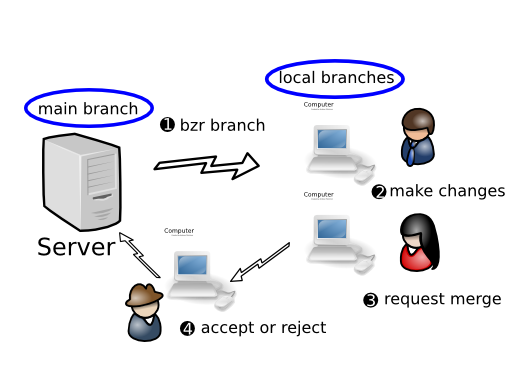
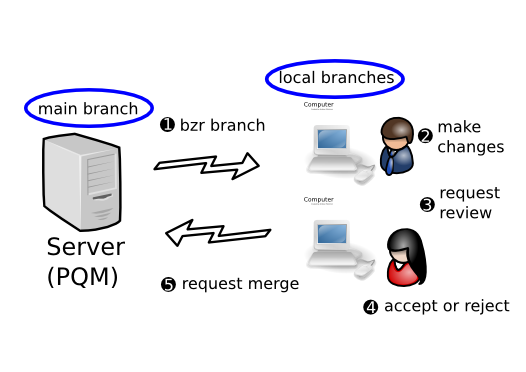

Using gatekeepers¶
The decentralized with human gatekeeper workflow¶
In this workflow, one developer (the gatekeeper) has commit rights to the main branch while other developers have read-only access. All developers make their changes in task branches.
When a developer wants their work merged, they ask the gatekeeper to review their change and merge it if acceptable. If a change fails review, further development proceeds in the relevant task branch until it is good to go.
Note that a key aspect of this approach is the inversion of control that is implied: developers no longer decide when to “commit/push” changes into the central branch: the code base evolves by gatekeepers “merging/pulling” changes in a controlled manner. It’s perfectly acceptable, indeed common, to have multiple central branches with different gatekeepers, e.g. one branch for the current production release and another for the next release. In this case, a task branch holding a bug fix will most likely be advertised to both gatekeepers.
One of the great things about this workflow is that it is hugely scalable. Large projects can be broken into teams and each team can have a local master branch managed by a gatekeeper. Someone can be appointed as the primary gatekeeper to merge changes from the team master branches into the primary master branch when team leaders request it.
The decentralized with automatic gatekeeper workflow¶
To obtain even higher quality, all developers can be required to submit changes to an automated gatekeeper that only merges and commits a change if it passes a regression test suite. One such gatekeeper is a software tool called PQM.
For further information on PQM, see https://launchpad.net/pqm.